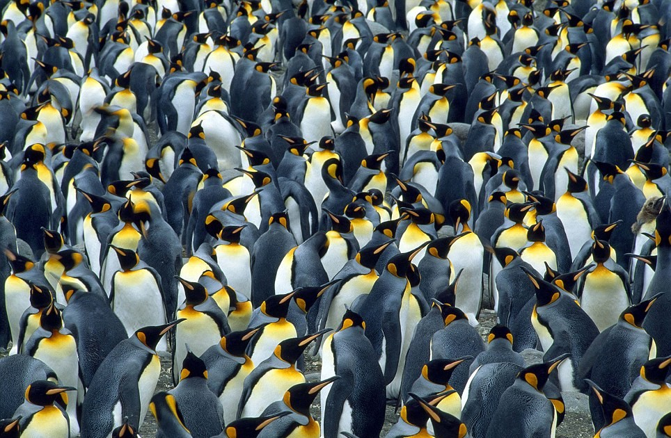
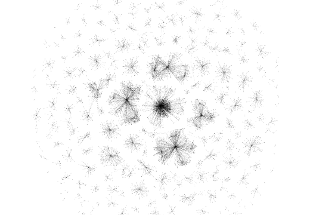

Understanding Knowledge Networks
Krishna Mangaladevi, Wouter Beek, Tobias Kuhn
International Workshop on Linked Data for Information Extraction (LD4IE) at ISWC
Vienna, 2017
What is the Structure of the Networks in the Linked Open Data Cloud?

Do these networks all look the same?
Or is there a Large Diversity of Familiar Forms?

Or are they Freak Networks with Highly Unusual Properties?

How Can we Find Out?
Problem: The Linked Open Data cloud is so big and dispersed...
lodlaundromat.org


LOD Laundromat Layer Cake
Frank
https://github.com/LODLaundry/Frank
$ frank statements --predicate foaf:name | head -n 5
eurostat:void.rdf#Eurostat foaf:name "Eurostat" . author:5ff33...1c4 foaf:name "Dong-Mei Shi" . author:d873s...19b foaf:name "Feng-Xia Ma" . author:fbbcf...54c foaf:name "Ya-Guang Chen" . author:1ec76...f4b foaf:name; "Jian Yu" .
Beek & Rietveld. Frank: The LOD Cloud at your Fingertips. ESWC Dev Workshop, 2015
Selected RDF properties
| RDF property | Description |
|---|---|
| foaf:knows | "A person known by this person (indicating some level of reciprocated interaction between the parties)." |
| geop:hasBorderWith | Borders among countries according to the United Nations |
| osspr:contains | "The interior of one object completely contains the interior of the other. Their boundaries may or may not intersect." |
| osspr:within | "The interior of one object is completely within the interior of the other object. Their boundaries may or may not intersect." |
| swrc:affiliation | Mapping of organizations to affiliated entities (e.g. employees) |
| lexinfo:partofspeech | "Term used to describe how a particular word is used in a sentence." |
| gn:parentCountry | "parent country" |
| tag:associatedTag | "The object is a Tag which plays a role in the subject Tagging." |
And we additionally selected 8 properties from SKOS.
Calling Frank...
frank statements -p foaf:knows | grep last-fm | nt2gml > lastfm.gml
foaf:knows (Last.fm subset)

geop:hasBorderWith

osspr:contains
osspr:within

swrc:affiliation

lexinfo:partOfSpeech

gn:parentCountry
tag:associatedTag
Visualizations
| foaf:knows (Last.fm subset) |
geop:hasBorderWith |
osspr:contains |
| osspr:within |
swrc:affiliation |
lexinfo:partOfSpeech |
| gn:parentCountry |
tag:associatedTag |
Visualizations: SKOS
skos:related |
skos:narrower |
skos:relatedMatch |
skos:broadMatch |
skos:narrowMatch |
skos:closeMatch |
skos:exactMatch |
skos:hasTopConcept |
Sizes of analyzed networks
| Network | Documents | Nodes | Edges | Size Class |
|---|---|---|---|---|
| foaf:knows | 421 | 1776554 | 2374275 | Large |
| foaf:knows (Last.fm) | 310 | 315765 | 469361 | Large |
| geop:hasBorderWith | 13 | 132 | 229 | Small |
| osspr:contains | 94 | 7736 | 10098 | Medium |
| osspr:within | 26 | 16623 | 28544 | Medium |
| swrc:affiliation | 508 | 12860 | 12366 | Medium |
| lexinfo:partOfSpeech | 10 | 60700 | 60678 | Medium |
| gn:parentCountry | 14 | 197117 | 197115 | Large |
| tag:associatedTag | 328 | 27469 | 25670 | Medium |
| skos:related | 818 | 208076 | 300250 | Large |
| skos:narrower | 5848 | 181261 | 169489 | Large |
| skos:relatedMatch | 395 | 33862 | 34546 | Medium |
| skos:broadMatch | 45 | 9304 | 7207 | Small |
| skos:narrowMatch | 42 | 1807 | 1338 | Small |
| skos:closeMatch | 419 | 328877 | 254703 | Large |
| skos:exactMatch | 5901 | 263291 | 213306 | Large |
| skos:hasTopConcept | 5854 | 26180 | 25304 | Medium |
Summary of Network Metrics
| Clustering coefficient | Inequality | |||||||
|---|---|---|---|---|---|---|---|---|
| Network | Size | Avg. degree | Local | Global | Bi-partite? | Power-law α | Degree dist. | Comp. size |
| foaf:knows | Large | 2.673 | 0.1017 | 0.0116 | No | 1.992 | 0.6047 | 0.7783 |
| foaf:knows (Last.fm) | Large | 2.973 | 0.0932 | 0.0046 | No | 2.020 | 0.6095 | 0.9911 |
| geop:hasBorderWith | Small | 3.470 | 0.3920 | 0.2304 | No | 4.559 | 0.4179 | 0.6174 |
| osspr:contains | Medium | 2.611 | 0.6667 | 0.0076 | No | 1.9985 | 0.5696 | 0.7079 |
| osspr:within | Medium | 3.434 | 0.6512 | 0.0065 | No | 1.8653 | 0.5696 | 0.7286 |
| swrc:affiliation | Medium | 1.923 | 0.0 | 0.0 | No | 2.453 | 0.4305 | 0.6845 |
| lexinfo:partOfSpeech | Medium | 1.999 | 0.0 | 0.0 | Yes | 1.0277 | 0.4998 | 0.8949 |
| gn:parentCountry | Large | 2.000 | 0.0 | 0.0 | No | 1.253 | 0.5000 | 0.9032 |
| tag:associatedTag | Medium | 1.869 | 0.0 | 0.0 | Yes | 3.0444 | 0.4064 | 0.3638 |
| skos:related | Large | 2.886 | 0.2624 | 0.1119 | No | 2.857 | 0.4864 | 0.4862 |
| skos:narrower | Large | 1.87 | 0.0304 | 0.002 | No | 2.8528 | 0.4273 | 0.7326 |
| skos:relatedMatch | Medium | 2.040 | 1.41E-04 | 2.03E-05 | No | 3.4793 | 0.3846 | 0.5465 |
| skos:broadMatch | Small | 1.549 | 0.0 | 0.0 | Yes | 3.3594 | 0.3248 | 0.3961 |
| skos:narrowMatch | Small | 1.481 | 0.0 | 0.0 | Yes | 2.1632 | 0.2898 | 0.2790 |
| skos:closeMatch | Large | 1.549 | 2.14E-04 | 1.01E-04 | No | 3.1513 | 0.2808 | 0.2620 |
| skos:exactMatch | Large | 1.620 | 0.0878 | 0.1758 | No | 3.212 | 0.3458 | 0.1940 |
| skos:hasTopConcept | Medium | 1.933 | 0.0 | 0.0 | Yes | 1.7919 | 0.4754 | 0.5665 |
Comparison to Other Networks
- AS2001: Internet nodes at the autonomous system (AS) level
- Routers: the router level network of the Internet
- Gnutella: the network structure of Gnutella servers
- WWW: the link network of websites
- Protein: protein-protein interaction network in yeast
- Metabolic: chemicals connected by metabolic reactions
- Math1999: collaboration network of mathematicians via co-authorship
- Actors: the network of actors linked by participation in movies
- E-mail: a network e-mail addresses connected by messages sent
Comparison of average degree to other networks

Comparison of global clustering coefficient to other networks

What does it Take to Analyze Networks?
Boccaletti et al. in 2006:
- Number of networks: 9
- Impact: 7674 citations
Our work in 2016:
- Number of networks: 16
- Impact: ?
Network analysis has become very easy with LOD Laundromat technology!
Linked Open Data Networks are not Like Penguins or Freaks, ...

... but More Like Fish!

(a wide variety of familiar network structures)